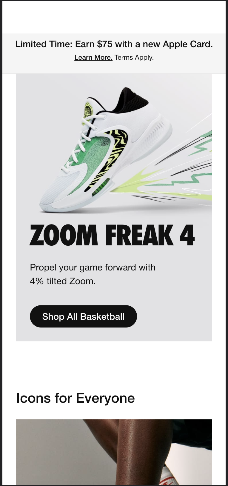
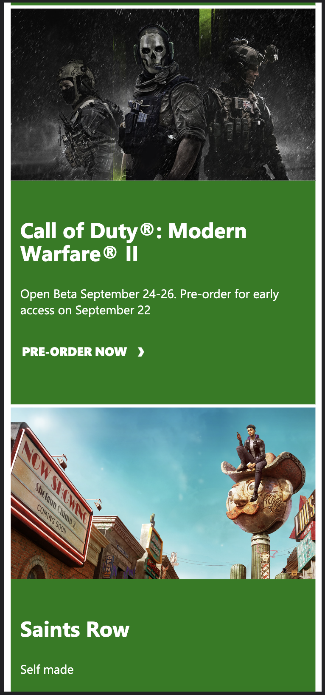

Design Principles Document
Clayton Vanfleet
Hick's Law
Nike
nike.com Hick's law defines the time it takes a person to make a decision when presented with choices. When there are too many choices on a website, it takes a person longer to make a decision. Nike makes it simple for the user by having less choices, which will allow them to make quicker decisions.
PARC: Repetition
Xbox
xbox.com Xbox does a great job at repeating actions to make their website look clean and organized.
PARC: Contrast
Best Buy
bestbuy.comBest Buy has come great contrast on their website. Most of the webpage is white, this makes it look clean. The blocks that do have color have white wording that make it night and day when reading the content.